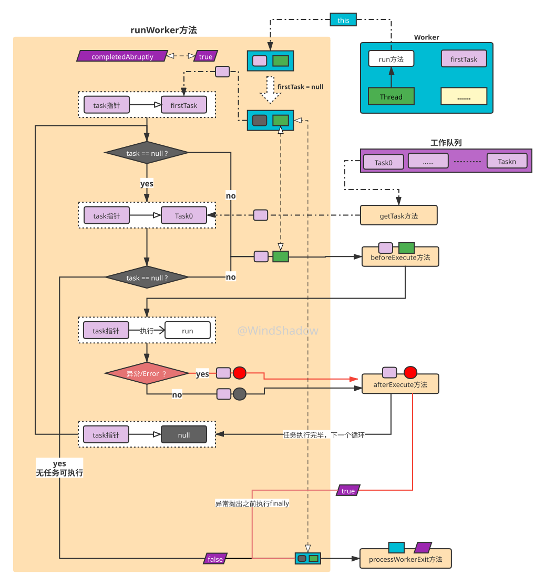
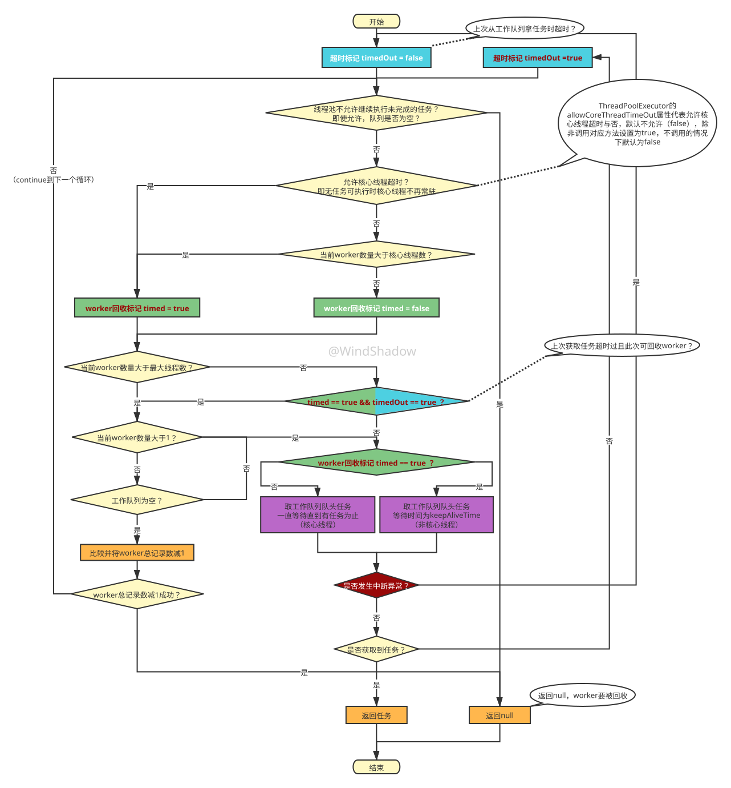

Java线程池原理（二）
承接上文，我们知道了线程池可以复用线程去执行任务，Executors工具类通过设置不同的参数来得到一些特性的线程池，那么继续深入，了解线程池是如何实现线程复用、核心线程的维持、非核心线程的存活控制，这些核心功能整体是如何运作的。
线程复用、核心线程的维持、非核心线程的存活控制
线程复用
此小节重点讲线程池线程复用的机制，遇到一些影不易读懂的代码我们可以跳过。
首先，线程池executor方法是线程池的入口，顺着该方法分析，不难发现一个关键的方法：addWorker(Runnable firstTask, boolean core)，这个方法是负责添加Worker以执行任务的。
那么我们目的很明确，在此只需要关心3个点：1、具体添加了什么。2、任务怎么被执行的。3、firstTask和core参数怎么运用的。
ThreadPoolExecutor的addWorker方法
这里我们先入为主一波：
猜测该方法添加了一个叫Worker的东西，Worker内部使用一个boolean变量标识其内部Thread的性质是核心还是非核心线程，按照我们的常规的编程思路确实容易这样想。
接下来分析addWorker方法。
private boolean addWorker(Runnable firstTask, boolean core) {
retry:/// java 类似goto语句的语法，此处不重要
for (;;) {
int c = ctl.get();
int rs = runStateOf(c);
// Check if queue empty only if necessary.
if (rs >= SHUTDOWN &&
! (rs == SHUTDOWN &&
firstTask == null &&
! workQueue.isEmpty()))
return false;
for (;;) {
int wc = workerCountOf(c);
if (wc >= CAPACITY ||
wc >= (core ? corePoolSize : maximumPoolSize))
return false;
if (compareAndIncrementWorkerCount(c))
break retry;
c = ctl.get(); // Re-read ctl
if (runStateOf(c) != rs)
continue retry;
// else CAS failed due to workerCount change; retry inner loop
}
}
/// 0.1、前半段的代码的作用是通过cas进行自旋，先不必关心自旋干啥
/// 0.2、只需知道 core 参数的作用也是参与到了其中，到此 core 参数的使命已经完成！后面已经用不到了
boolean workerStarted = false;/// 1、标识worker是否启动的变量
boolean workerAdded = false;/// 2、标识worker是否已经添加的变量
Worker w = null;/// 3、声明一个worker
try {
w = new Worker(firstTask);/// 4、new 一个worker
final Thread t = w.thread;/// 5、拿到 worker 内的线程
if (t != null) {
final ReentrantLock mainLock = this.mainLock;
mainLock.lock();
try {
// Recheck while holding lock.
// Back out on ThreadFactory failure or if
// shut down before lock acquired.
int rs = runStateOf(ctl.get());
if (rs < SHUTDOWN ||
(rs == SHUTDOWN && firstTask == null)) {
if (t.isAlive()) // precheck that t is startable
throw new IllegalThreadStateException();
workers.add(w);/// 6、经过一系列状态等判断后，添加worker到workers中，阅读源码发现workers是ThreadPoolExecutor内部的一个保存worker的HashSet
int s = workers.size();
if (s > largestPoolSize)
largestPoolSize = s;
workerAdded = true;
}
} finally {
mainLock.unlock();
}
if (workerAdded) {
t.start();/// 7、worker添加成功，启动worker内的线程
workerStarted = true;/// 8、worker启动成功
}
}
} finally {
if (! workerStarted)
addWorkerFailed(w);
}
return workerStarted;
}
总结：addWorker方法添加一个Worker到ThreadPoolExecutor保存worker的一个HashSet中，之后Worker内的Thread被启动。而firstTask参数作为Worker构造参数被使用，core参数仅参与了一个cas自旋操作，和Worker没啥关系。
显然，我们先入为主的想法并不正确。
前文讲到线程池内是通过Worker干活的，其内部有一个Thread在工作，Worker是线程池实现线程复用的关键。要了解线程池线程复用等原理势必要先了解Worker对象如何工作的。
Worker
Worker类是ThreadPoolExecutor的私有非静态内部类，继承了AQS且实现了Runnable接口，Java中的AQS在此不展开讲，到这里我们只需知道Worker继承了AQS使自身可对外提供加解锁的方法，外部的合理编码保证并发访问的安全性即可，即使不太了解AQS也没关系。通过Worker类的方法名也可大致知道是干什么的。
private final class Worker extends AbstractQueuedSynchronizer implements Runnable {
private static final long serialVersionUID = 6138294804551838833L;
/// 内部维护了一个线程，该线程通过线程池的线程工厂创建
final Thread thread;
/// 第一个任务
Runnable firstTask;
/// 该参数保存已经完成的任务的数量
volatile long completedTasks;
/// 构造方法，传入第一个任务，
Worker(Runnable firstTask) {
setState(-1); // inhibit interrupts until runWorker
this.firstTask = firstTask;
/// 将自身引用传入，通过线程池的线程工厂创建线程，
this.thread = getThreadFactory().newThread(this);
}
/// ...
}
很显然，Worker内部的Thread运行时，会调用Worker自身的run方法，看看Worker的run方法做了哪些事。
public void run() {
runWorker(this);/// 调用外部ThreadPoolExecutor实例的runWorker方法
}
ThreadPoolExecutor的runWorker方法
来到ThreadPoolExecutor的runWorker方法，这个方法极其关键！！！
final void runWorker(Worker w) {
Thread wt = Thread.currentThread();/// 1、获取当前线程，也就是worker内的线程
Runnable task = w.firstTask;/// 2、获取worker内的firstTask，第一个任务
w.firstTask = null;/// 3、worker内的firstTask置空
w.unlock(); // allow interrupts
boolean completedAbruptly = true;/// 4、worker内的线程是否突然结束的标志
try {
while (task != null || (task = getTask()) != null) {/// 5、判断任务是否为空，否则通过getTask方法从工作队列获取任务
w.lock();
// If pool is stopping, ensure thread is interrupted;
// if not, ensure thread is not interrupted. This
// requires a recheck in second case to deal with
// shutdownNow race while clearing interrupt
if ((runStateAtLeast(ctl.get(), STOP) ||
(Thread.interrupted() &&
runStateAtLeast(ctl.get(), STOP))) &&
!wt.isInterrupted())
wt.interrupt();
try {
beforeExecute(wt, task);/// 6、调用任务之前的通知，空实现，子类可覆盖实现
Throwable thrown = null;
try {
task.run();/// 7、调用任务的run方法执行任务！！！
} catch (RuntimeException x) {
thrown = x; throw x;
} catch (Error x) {
thrown = x; throw x;
} catch (Throwable x) {
thrown = x; throw new Error(x);
} finally {
afterExecute(task, thrown);/// 8、调用任务结束之后的通知，空实现，子类可覆盖实现
}
} finally {
task = null;/// 9、任务执行结束后，置空
w.completedTasks++;
w.unlock();
}
}
completedAbruptly = false;/// 10、worker执行任务期间没有抛异常，worker内的线程正常结束工作
} finally {
processWorkerExit(w, completedAbruptly); /// 11、处理worker的退出逻辑
}
}
到这里，线程复用的机制很明了了：通过循环不断从工作队列中获取任务并执行；
不难总结出Worker的工作机制：worker通过实现Runnable接口，内部维护一个Thread线程对象，将自身作为“跳板”，优先执行自身初始化时携带的任务，之后不断消费（执行）线程池工作队列中的任务，直到队列中任务没有任务为止，worker的任务就结束了。
用图表示ThreadPoolExecutor的runWorker方法主要的执行过程如下：

不过目前为止，我们还是没发现和核心线程与非核心线程相关的痕迹，带着疑问继续往下走。
核心线程的维持、非核心线程的存活控制
阅读ThreadPoolExecutor的runWorker方法，不难发现，每个Worker对象结束使命后，都会走到ThreadPoolExecutor的processWorkerExit方法执行退出逻辑。该方法入参除了Worker对象以外还需要传入一个boolean类型的completedAbruptly参数，见明之意，该参数表示该Worker对象是否是“突然结束”，不难发现只有任务task执行期间抛出异常或error，Worker对象才算是“突然结束”，completedAbruptly为true，反之正常结束，completedAbruptly为false。
ThreadPoolExecutor的processWorkerExit方法
综上所述，processWorkerExit方法职责就是处理Worker对象正常与非正常的结束，也可以理解为对Worker的回收。
private void processWorkerExit(Worker w, boolean completedAbruptly) {
if (completedAbruptly) // If abrupt, then workerCount wasn't adjusted
decrementWorkerCount();/// 1、从上一行的英文注释和该方法的意义可知，对于非正常的结束的worker，需要调整当前线程池记录的worker数量，这里暂时不必关心如何调整
final ReentrantLock mainLock = this.mainLock;
mainLock.lock();
try {
completedTaskCount += w.completedTasks;/// 2、记录worker完成的任务数量到总完成数上
workers.remove(w);/// 3、从HashSet中移除该worker
} finally {
mainLock.unlock();
}
tryTerminate();
int c = ctl.get();
if (runStateLessThan(c, STOP)) {/// 4、如果此时线程池状态不是结束状态
if (!completedAbruptly) {/// 5、如果worker正常结束，if 内的逻辑可不关心
int min = allowCoreThreadTimeOut ? 0 : corePoolSize;
if (min == 0 && ! workQueue.isEmpty())
min = 1;
if (workerCountOf(c) >= min)
return; // replacement not needed
}
addWorker(null, false);/// 6、worker非正常结束，说明执行任务时抛了异常，需要补充一个新的worker，因为是补充的，其firstTask是null，而且是以非核心线程的设置去补充的
}
}
小总结一下processWorkerExit主要干了几件事：
- 记录
Worker对象完成的任务数到总记录中 - 移除该
Worker对象 - 处理非正常结束
Worker对象时，调整线程池记录的worker数量，补充一个新的worker且是以非核心线程的设定去补充的
提一下为什么Worker非正常结束时要补充新的Worker：
- 再仔细看runWorker方法，因为
Worker非正常结束说明任务task的run方法抛出了异常（或error），尽管做了try-catch处理，作者的做法是把异常继续往抛出，而处理Worker的回收工作processWorkerExit方法是在finally块执行的，也就是说processWorkerExit方法执行完之后，异常就要被抛出去了，虚拟机接受到异常之后，就会销毁该线程，也就是销毁Worker内的Thread（线程死亡），此时需要补充新的Worker继续干活。 - 此处给读者留下一个小思考：既然runWorker方法catch到了异常或error，可以不抛出去吗？
不过跟踪到这里还是没发现核心线程与非核心线程相关的操作，而且在补充新的worker时，还是以非核心线程去补充的，这也是疑问点，并且如果每个Worker使命结束后都要移除了，Worker内的线程也执行完代码也要结束生命了，说好的核心线程不会被销毁呢？
ThreadPoolExecutor的getTask方法
回过头看，我们还差一个方法没有分析，那就是ThreadPoolExecutor的getTask方法，在runWorker方法中Worker通过getTask从工作队列中获取任务，不难得出：如果获取的任务为null，Worker将被回收。而工作队列是阻塞队列，所以如果Worker在获取任务时被阻塞，那么就不会被回收，从而实现Worker内Thread的“常驻”效果，这确实是个思路。话不多说进源码。
下列代码笔者将保留原生的官方英文注释，增加自己的注释。
private Runnable getTask() {
/// 1、超时的标记变量，官方注释很明了：是否是因为上一次执行阻塞队列poll 方法导致的超时
boolean timedOut = false; // Did the last poll() time out?
for (;;) {
int c = ctl.get();
int rs = runStateOf(c);
/// 2、注意这里的判断，如果为true，说明线程池状态不处于running，如果是shutdow，则再判断工作队列是否为空，为空则返回null，其余的状态也返回null，worker将被回收
// Check if queue empty only if necessary.
if (rs >= SHUTDOWN && (rs >= STOP || workQueue.isEmpty())) {
decrementWorkerCount();
return null;
}
int wc = workerCountOf(c);/// 3、获取当前worker数量
/// 4、当允许核心线程超时（默认是不允许false）或当前worker数量大于核心线程数时，表示该worker可能需要回收，这里利用一个boolean来标记
// Are workers subject to culling?
boolean timed = allowCoreThreadTimeOut || wc > corePoolSize;
/// 5、满足指定条件（注意两个逻辑或运算以及逻辑或运算的特点），说明该worker的确需要回收
if ((wc > maximumPoolSize || (timed && timedOut))
&& (wc > 1 || workQueue.isEmpty())) {
if (compareAndDecrementWorkerCount(c))/// 6、尝试比较并将worker总记录数减1，成功返回null，失败则进入下一次循环
return null;
continue;
}
try {
Runnable r = timed ?
workQueue.poll(keepAliveTime, TimeUnit.NANOSECONDS) :/// 7、该worker可能需要回收，则调用 poll 方法等待一定时间
workQueue.take();/// 8、该worker不需要回收，take 方法一直等待直到获取到任务
if (r != null)
return r;
timedOut = true;/// 9、如果为null，那一定是调用 poll 方法超时了
} catch (InterruptedException retry) {/// 10、捕获队列出队时可能的中断异常，暂时不必关系
timedOut = false;
}
}
}
这段代码比较短但是比较精妙，需要反复揣摩，下面贴出笔者制作的流程图

到此，终于看到线程池七八成左右的真身了：runWorker方法使worker不断执行任务和任务通知，processWorkerExit方法负责worker的回收工作，而getTask方法负责从工作队列获取任务进一步控制worker内Thread的阻塞等待，进一步控制worker的回收，从而实现核心线程的常驻效果和非核心线程的存活控制。
提交优先级与执行优先级
有如下程序
public static void main(String[] args) {
ThreadPoolExecutor executor = new ThreadPoolExecutor(10,20,
300L, TimeUnit.MILLISECONDS,
new ArrayBlockingQueue<>(10),
new ThreadPoolExecutor.AbortPolicy());
for (int i = 1; i <= 40; i++) {
System.out.println("execute: " + i);
final int n = i;
executor.execute(() -> {
System.out.println("start run number: " + n);
try {
TimeUnit.SECONDS.sleep(100000L);
} catch (InterruptedException e) {
e.printStackTrace();
}
});
}
executor.shutdown();
}
问：提交到第几个任务（i = ?）时，线程池拒绝执行任务而抛出异常？
答：i = 31时。
线程池可接受的最大任务数量为：最大线程数+工作队列容量=30。上述每个任务都进行了一次长时间睡眠，显然for循环体积任务执行完之前，线程池内没有一个任务执行完。
值得注意的是，控制台打印的“start run number: {n}”字符串，应该是1到10左右先被打印，其次是21到130后被打印，最后是11到120区间的数字被打印，而不是我们生活中任务认为的“先提交就先得到执行”。
于是结合addWorker方法得出线程池提交优先级：
核心线程 > 工作队列 > 非核心线程
于是结合getTask方法得出线程池执行优先级：
核心线程 > 非核心线程 > 工作队列
小结
通过以上4个方法的解读，我们可以重新认识worker对象：
- 通俗的说每个worker被创建之后，其使命就是不断从工作队列领取任务去执行，在无任务可执行（不是任务全部执行完毕，两者概念差别很大），即领取不到任务之后，就要被回收。
不仅如此，核心线程与非核心线程也要重新理解：
- 核心线程：worker对象内的线程在获取任务前，线程池状态处于running，此时若当前worker数（反应线程池内的线程数）小于等于设置的核心线程数，该线程以poll方式方式获取任务，若工作队列无任务，则该线程将一直等待新的任务提交进来，该线程也就顺理成章的成为线程池常驻线程，也就是核心线程
- 非核心线程：worker对象内的线程在获取任务前，线程池状态处于running，此时若当前worker数（反应线程池内的线程数）大于设置的核心线程数，该线程以take方式方式获取任务，若工作队列无任务，则该线程将等待新的任务提交进来，等待时长为keepAliveTime，超时之后便会被对应worker被回收，等待期间该线程也就成为线程池非核心线程。
所以每个worker内的线在启动工作期间都是相同的性质，不分核心与非核心，只有工作队列无任务可执行时，才能明确线程的性质是核心还是非核心，同时也决定了worker的回收与否（既分高下，也决生死？！）。
回过头来看addWorker方法中表示线程类型的core参数，也只是参与了当前worker数与核心线程数或非核心线程数的比较，再无他用，这也说的通了。
在阅读这些方法中，我们跳过了一些“影响阅读”的代码，如worker自身的lock和unlock究是为了防止啥，ThreadPoolExecutor成员变量中ReentrantLock的mainLock保证了什么的线程安全，以及线程池自身的其它功能，如线程池的worker数量和状态等如何感知的……请听下回合分解。